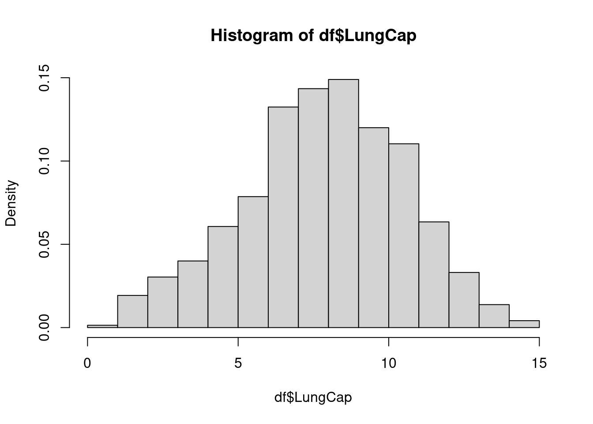
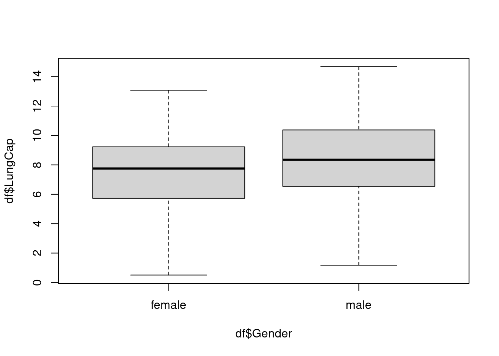
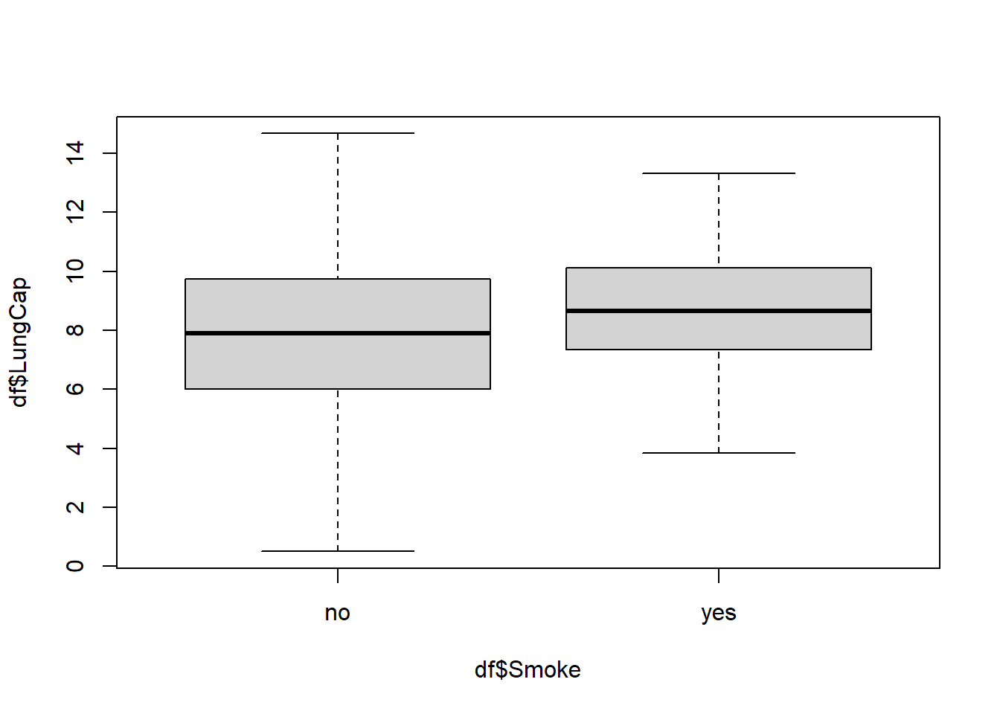
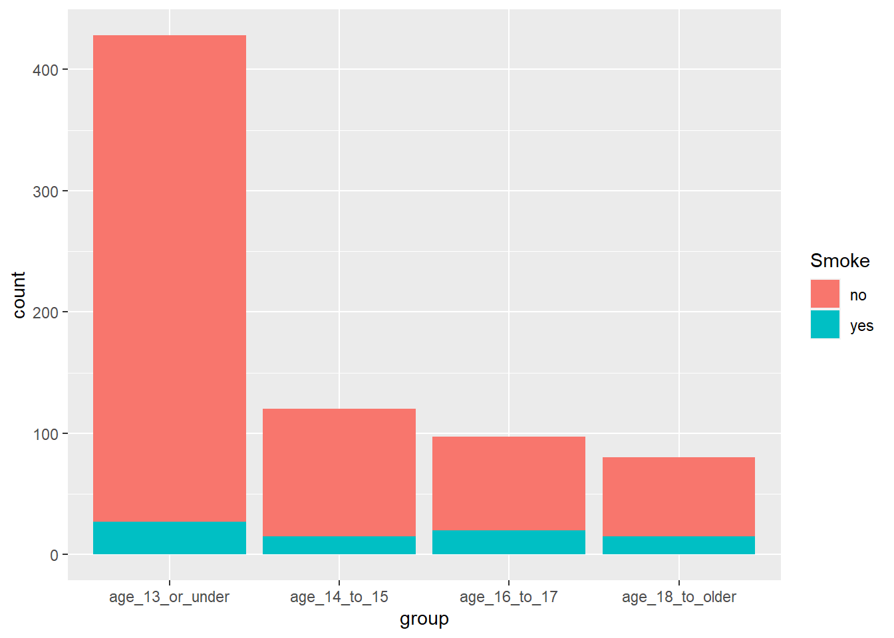

# A tibble: 725 × 6
LungCap Age Height Smoke Gender Caesarean
<dbl> <dbl> <dbl> <chr> <chr> <chr>
1 6.48 6 62.1 no male no
2 10.1 18 74.7 yes female no
3 9.55 16 69.7 no female yes
4 11.1 14 71 no male no
5 4.8 5 56.9 no male no
6 6.22 11 58.7 no female no
7 4.95 8 63.3 no male yes
8 7.32 11 70.4 no male no
9 8.88 15 70.5 no male no
10 6.8 11 59.2 no male no
# … with 715 more rows
# ℹ Use `print(n = ...)` to see more rows
1a.: What does the distribution look like?
Here is the distribution of LungCap with probability density on the y-axis (instead of frequency, the default):
Code
hist(df$LungCap, freq =FALSE)

It looks to approach a normal distribution.
1b. Comparing Males and Females
Males seem to have a higher LungCap in general:
Code
boxplot(df$LungCap ~ df$Gender)

1c. Smokers
Surprisingly, smokers in this dataset overall are shown to have a higher average lung capacity. This is not what I expected so there might be other factors at play.
Code
boxplot(df$LungCap ~ df$Smoke)

1d. & 1e.: Smoking, Lung Capacity, and Age
I am approaching this as a compound question. I think a clustered bar chart does the best job of representing the relationship between smoking, lung capacity, and age:
As we see, it looks like older individuals tend to have higher lung capacities regardless of whether they smoke or not. Age seems to be the bigger determiner of lung capacity than smoking status.
Here is a 100% stacked bar chart which shows that those over 18 also smoke more than other cohorts (which is expected):
Code
grouped_df %>%ggplot(aes(x=group, fill = Smoke)) +geom_bar(position ="fill")
It seems that because the percentage of smokers queried are more likely to be older, they will naturally have larger lung capacities than others.
Perhaps more importantly, this dataset focuses significantly more on young people - so smaller lung capacities make up much more of the overall sample:
Code
grouped_df %>%ggplot(aes(x=group, fill = Smoke)) +geom_bar()

1f.: Correlation & Covariance
Code
cor(grouped_df$LungCap, grouped_df$Age)
[1] 0.8196749
Code
cov(grouped_df$LungCap, grouped_df$Age)
[1] 8.738289
In this case, the Pearson’s correlation value is .81. Generally two variables are considered strong when their r-value is larger than .7, so I will say that age and lung capacity are strongly correlated.
Their covariance is also positive, so an increase in one results in an increase in the other. That means lung capacity goes up with age rather than the other way around.
The variance among all prior convictions is 25948. The standard deviation among all prior convictions is 161.0838.
Source Code
---title: "Homework 1"author: "Steve O'Neill"description: "The first homework on descriptive statistics and probability"date: "09/20/2022"format: html: toc: true code-fold: true code-copy: true code-tools: truecategories: - hw1 - desriptive statistics - probability---# Question 1: Lung CapacityThis exercise focuses on lung capacity data (`LungCapData.xls`). First, the data must be "read into" R:```{r, echo=T}library(readxl)library(tidyverse)df <-read_excel("_data/LungCapData.xls")df```### 1a.: What does the distribution look like?Here is the distribution of `LungCap` with probability density on the y-axis (instead of frequency, the default):```{r, echo=T}hist(df$LungCap, freq =FALSE)```It looks to approach a normal distribution.### 1b. Comparing Males and FemalesMales seem to have a higher `LungCap` in general:```{r}boxplot(df$LungCap ~ df$Gender)```### 1c. SmokersSurprisingly, smokers in this dataset overall are shown to have a higher average lung capacity. This is not what I expected so there might be other factors at play.```{r}boxplot(df$LungCap ~ df$Smoke)```### 1d. & 1e.: Smoking, Lung Capacity, and AgeI am approaching this as a compound question. I think a clustered bar chart does the best job of representing the relationship between smoking, lung capacity, and age:```{r}grouped_df <- df %>%mutate(group =case_when(between(Age, 0, 13) ~"age_13_or_under",between(Age, 14, 15) ~"age_14_to_15",between(Age, 16, 17) ~"age_16_to_17", Age >='18'~"age_18_to_older",TRUE~NA_character_ ))grouped_df %>%ggplot(aes(fill=Smoke, y=LungCap, x=group)) +geom_bar(position="dodge", stat="identity")```As we see, it looks like older individuals tend to have higher lung capacities regardless of whether they smoke or not. Age seems to be the bigger determiner of lung capacity than smoking status.Here is a 100% stacked bar chart which shows that those over 18 also smoke more than other cohorts (which is expected):```{r}grouped_df %>%ggplot(aes(x=group, fill = Smoke)) +geom_bar(position ="fill")```It seems that because the percentage of smokers queried are more likely to be older, they will naturally have larger lung capacities than others.Perhaps more importantly, this dataset focuses significantly more on young people - so smaller lung capacities make up much more of the overall sample: ```{r}grouped_df %>%ggplot(aes(x=group, fill = Smoke)) +geom_bar()```### 1f.: Correlation & Covariance```{r}cor(grouped_df$LungCap, grouped_df$Age)cov(grouped_df$LungCap, grouped_df$Age)```In this case, the Pearson's correlation value is `.81`. Generally two variables are considered strong when their r-value is larger than `.7`, so I will say that age and lung capacity are strongly correlated.Their covariance is also positive, so an increase in one results in an increase in the other. That means lung capacity goes up with age rather than the other way around.# Question 2I will make a dataframe from the values provided:```{r}prior_convictions=c(0,1,2,3,4)freq=c(128, 434, 160, 64, 24)prisondata <-data.frame(prior_convictions, freq)prisondata```And add a probability column:```{r}prison_prob <- prisondata %>%mutate(prob = freq/sum(freq))prison_prob```### 2a.*What is the probability that a randomly selected inmate has exactly 2 prior convictions?*From the table above, the probability is `0.19753086`, nearly 20 percent.### 2b.*What is the probability that a randomly selected inmate has fewer than 2 prior convictions?*```{r}head(prison_prob,2) %>%summarise(sum(prob))```The probability a randomly selected inmate has has fewer than 2 prior convictions is ~69%.### 2c.*What is the probability that a randomly selected inmate has 2 or fewer prior convictions?*```{r}head(prison_prob,3) %>%summarise(sum(prob))```The probability a randomly selected inmate has 2 or fewer convictions is ~89%### 2d.*What is the probability that a randomly selected inmate has more than 2 prior convictions?*```{r}tail(prison_prob,3) %>%summarise(sum(prob))```The probability a randomly selected inmate has more than 2 prior convictions is ~30.6%### 2e.What is the expected value of the number of prior convictions?```{r}sum(prison_prob$prior_convictions*prison_prob$prob)#Or another way,weighted.mean(prison_prob$prior_convictions,prison_prob$prob)```The expected value of prior convictions is 1.28642 ### 2f```{r}prison_probvar(prison_prob$freq)sd(prison_prob$freq)```The variance among all prior convictions is 25948. The standard deviation among all prior convictions is 161.0838.